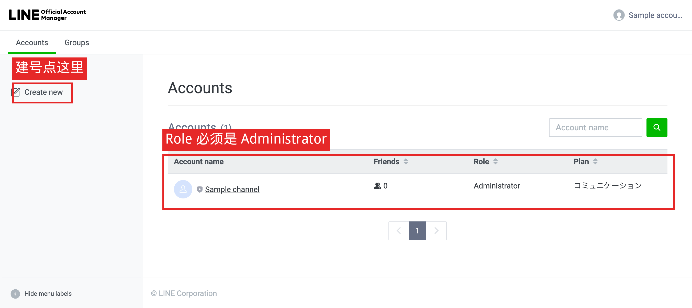
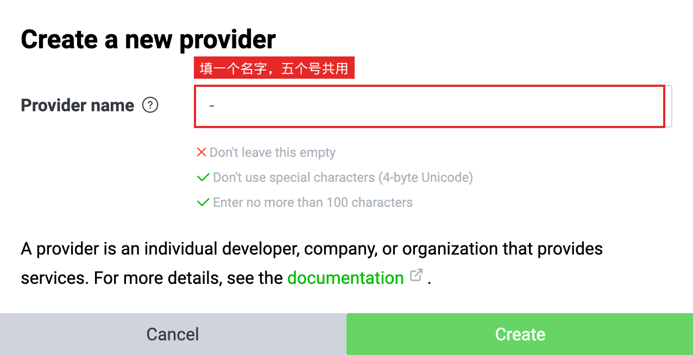
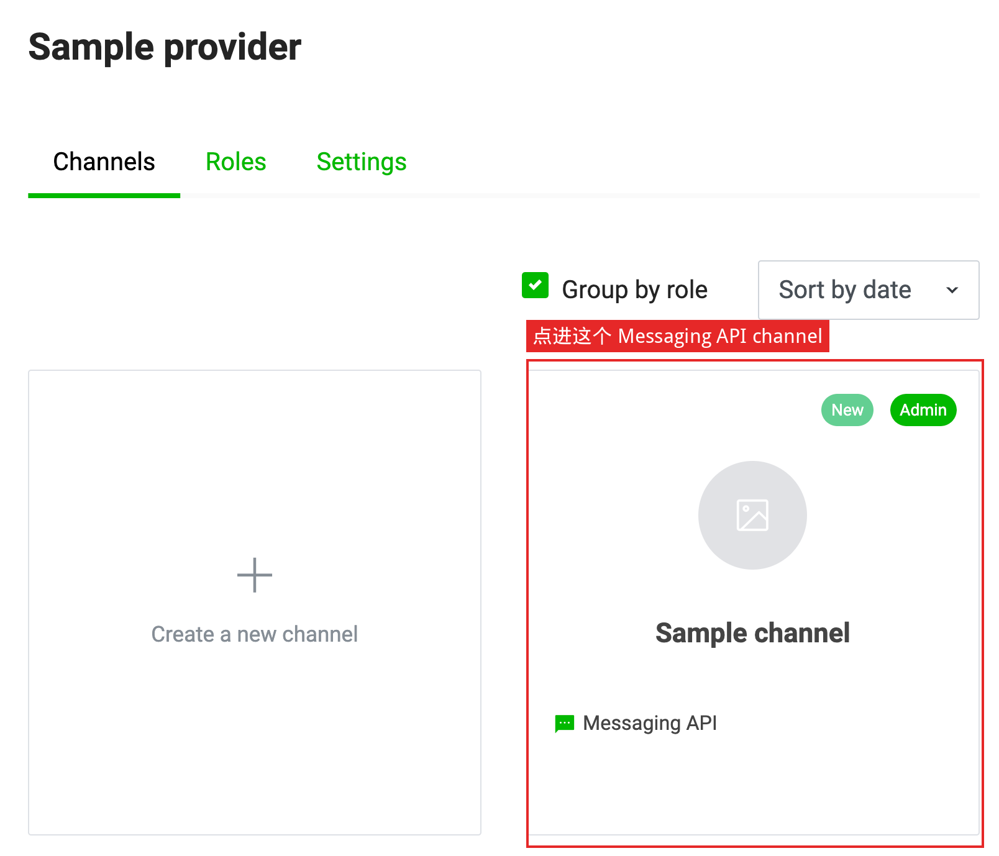
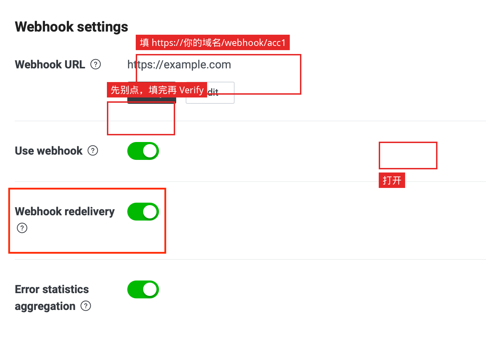

给运营用：在 LINE 后台建号、拿密钥、填 Webhook。截图都是 LINE 官方文档 原图整张，只加了红框。
每个账号要拿到、填好这三样：
| 做什么 | 在哪一页 |
|---|---|
| 复制 Channel secret | Console → 对应 channel → Basic settings |
| 点 Issue，复制 Channel access token | 同一 channel → Messaging API 页底部 |
| 填写 Webhook URL，打开 Use webhook，再点 Verify | 同一页的 Webhook settings |
5 个号就做 5 遍。Webhook 地址按号区分：/webhook/acc1 … /webhook/acc5。



官方文档没有 Basic settings / token 那两页的完整截图。进 channel 后自己找这两个字段：
Basic settings → Channel secret（复制）
Messaging API → Channel access token (long-lived) → 点 Issue（复制）
重新 Issue 会让旧 token 立刻失效。建议同时关掉 Greeting / Auto-reply，避免和程序抢答。
还在 Messaging API 页，找到 Webhook settings。5 个号各填一条：
https://你的域名/webhook/acc1
https://你的域名/webhook/acc2
https://你的域名/webhook/acc3
https://你的域名/webhook/acc4
https://你的域名/webhook/acc5
